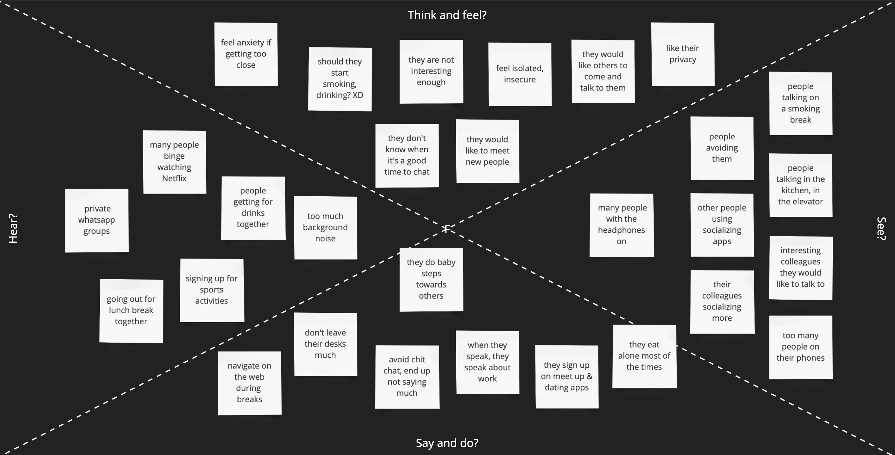
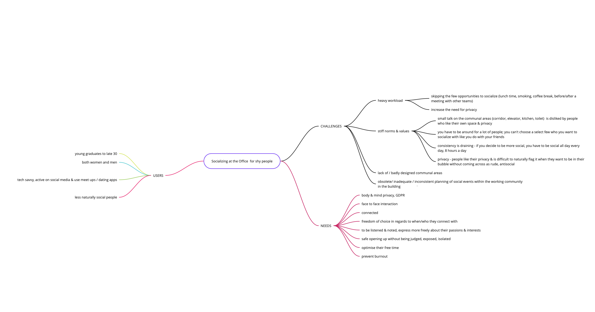
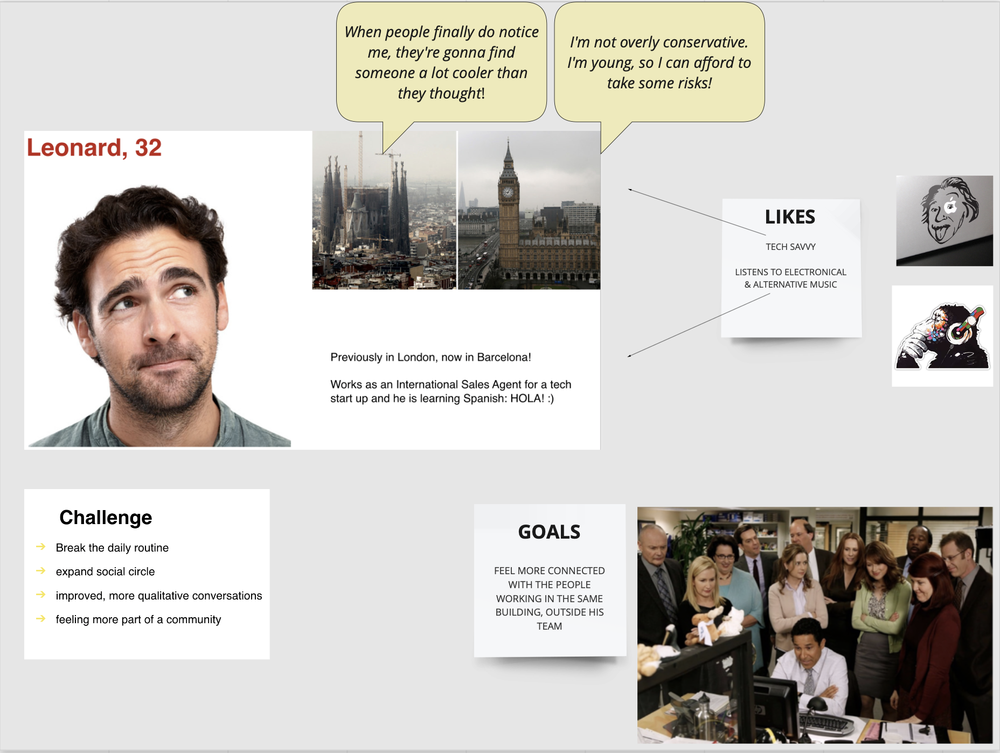
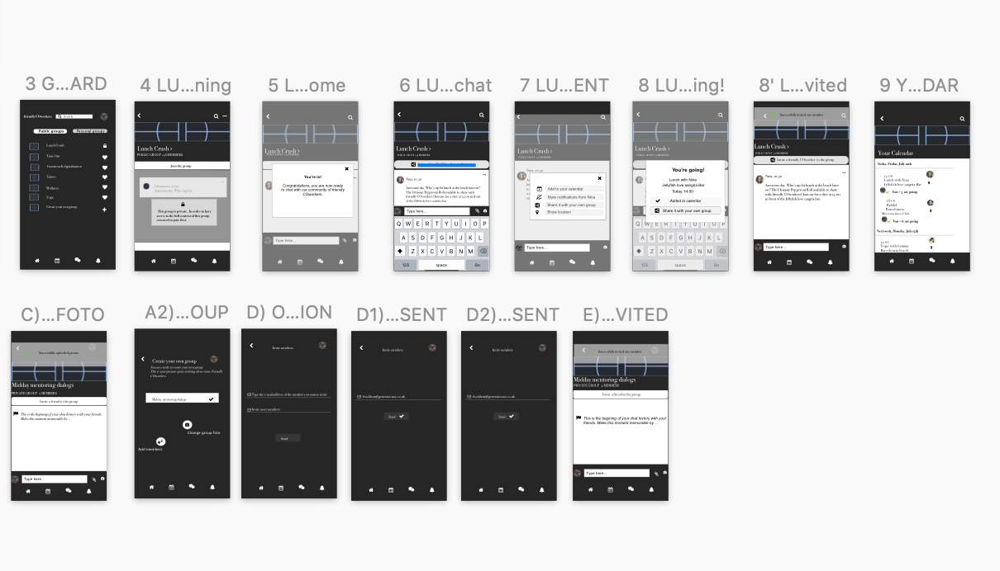

friendly COworkers

This is one of the projects I worked on while studying at Iron Hack in 2019.
My role
- ◦Design research
- ◦Prototyping
- ◦UI/UX design
- ◦Visual design
Platform:
Sketch, Miro, inVision
Overview
friendly COworkers is a safe, fast and practcial digital solution for work addicts, travelling workers, new starters and expats who experience anxiety when thinking about approaching someone on the hallway, in the elevator or in the communal kitchen.
friendly COworkers has two main goals:
- xxxxxxx
- xxxxxxxx
Strategy
Before jumping into design ask first. Research was based on surveys, interviews and investigations with young and middle aged coworkers on the different aspects of socializing at an office job outside of the direct team, across departments and companies in cases of coworking spaces.
I was hoping that through their answers, stories and insights I was going to be able to get a better understanding in terms of which were the challenges as well as the unexplored opportunities that should be looked into and taken into further consideration in order to improve our daily wellbeing and feel more connected with the people in our work environment.
Let’s start digging!
The Research
Over 60 people participated. During the survey I found out that:
42% of the people would like to connect more with other coworkers.
52% would consider meeting up again outside office premises within or outside working hours.
75% would like talking about passions and work events.
Less than 5% know more than 40 people within the company outside their direct team.
All the information resulted from the surveys and the interviews was gathered on the empathy map.
All the information gathered troughout the process of research has been synthesized in a mind map, a powerful tool that allows you to organize and understand information faster and better.
User Persona
In order to empathize and get to know my users better, I defined a user persona and created a journey map based on the data collected.
Information architecture
Empathy Map
LIKES AND PAIN POINTS
Workflows
EXAMPLE OF ONE OF THE APP’S USER FLOWS
Wireframes
Wireframes are the key to an efficient user interface and is the best way to go from a raw idea to the design and development with minimum losses.
I started with a low-fi version in order to define the basics. Based on the results following the user testing I built the mid-fidelity wireframes.
LOW FIDELITY WIREFRAMES